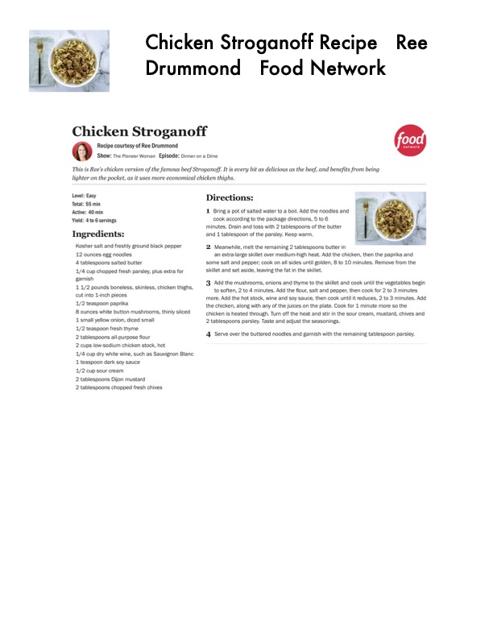

Chicken Stroganoff Recipe Ree

Original cookbook page 745
Ingredients
- Kosher salt and freshly ground black pepper
- 12 ounces egg noodles
- 4 tablespoons salted butter
- 1/4 cup chopped fresh parsley, plus extra for
- garnish
- 1.4/2 pounds boneless, skinless, chicken thighs,
- cut into Linch pieces
- 1/2 teaspoon paprika
- 8 ounces white button mushrooms, thinly sliced
- 1 small yellow onion, diced small
- 1/2 teaspoon fresh thyme
- 2 tablespoons all-purpose flour
- 2 cups low-sodium chicken stock, hot
- 1/4 cup dry white wine, such as Sauvignon Blanc
- 1 teaspoon dark soy sauce
- 1/2 cup sour cream
- 2 tablespoons Dijon mustard
- 2 tablespoons chopped fresh chives
Instructions
- Bring a pot of salted water to a boil. Add the noodles and minutes. Drain and toss with 2 tablespoons of the butter and 1 tablespoon of the parsley. Keep warm.
- Meanwhile, melt the remaining 2 tablespoons butter in an extra-large skillet over medium-high heat. Add the chicker 'some salt and pepper; cook on all sides until golden, 8 to 10 mi skillet and set aside, leaving the fat in the skillet.
- Add the mushrooms, onions and thyme to the skillet and coc to soften, 2 to 4 minutes. Add the flour, salt and pepper, ther more. Add the hot stock, wine and soy sauce, then cook until it r the chicken, along with any of the juices on the plate. Cook for 1 chicken is heated through. Turn off the heat and stir in the sour. 2 tablespoons parsley. Taste and adjust the seasonings.
- Serve over the buttered noodles and garnish with the remain
Recipe #745 from collection